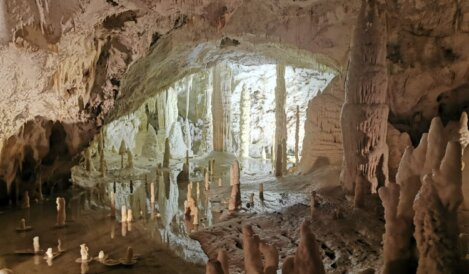
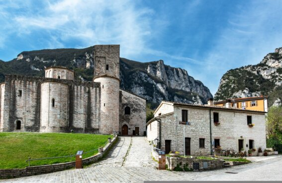
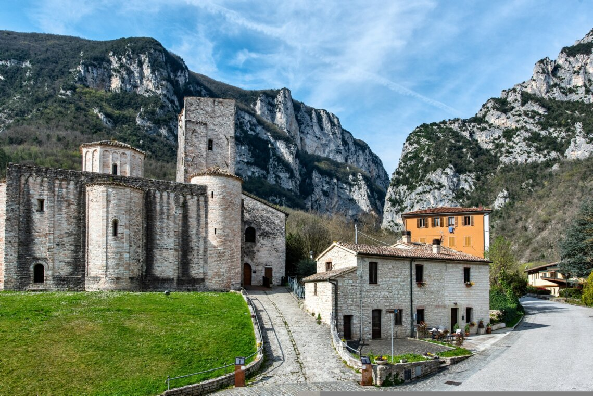
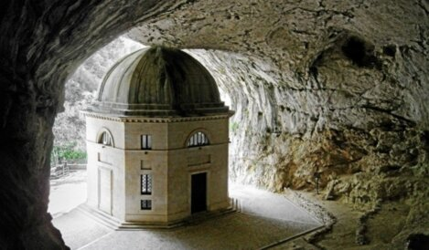
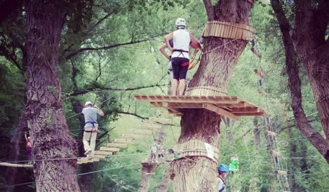
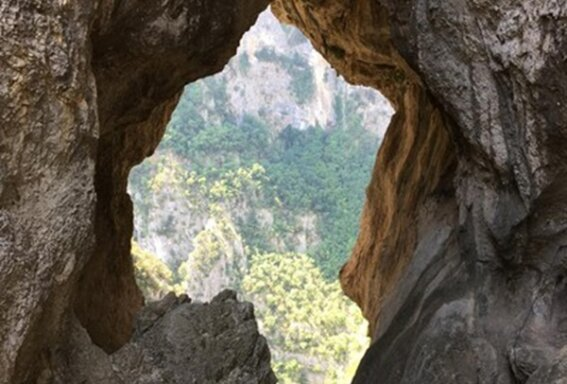
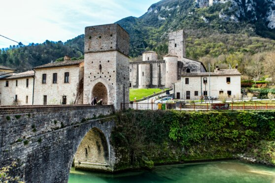
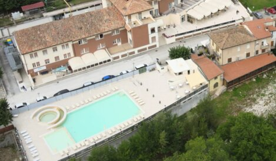

01

Benvenuti a «La Voce del Sentino»: la nostra casa vacanze è il punto di partenza ideale per esplorare le meraviglie naturali e culturali delle Marche.
La struttura si trova a San Vittore delle Chiuse. Un borgo medievale, situato nel comune di Genga (AN), all'ingresso della suggestiva Gola della Rossa e di Frasassi.
È celebre per la sua abbazia romanica ed è circondato da un anfiteatro naturale di montagne.
Immersa in un contesto tranquillo e panoramico, offre un soggiorno rilassante senza rinunciare alla comodità di essere vicino alle principali attrazioni.

La casa · San Vittore delle ChiuseDalle grotte millenarie ai sentieri, dalle terme al tempio nascosto nella roccia: otto esperienze si aprono nel raggio di pochi minuti.







